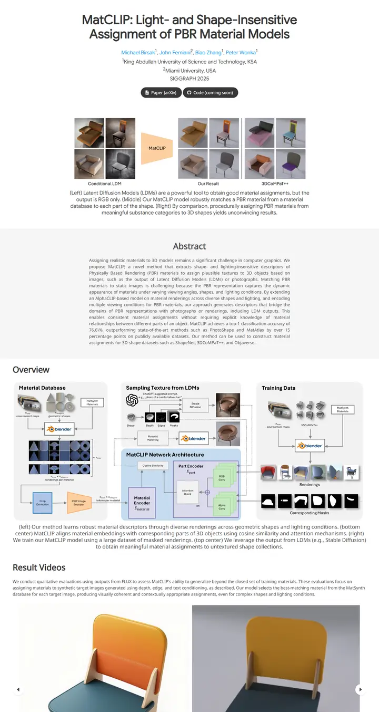

MatCLIP: Light- and Shape-Insensitive Assignment of PBR Material Models
実験ノートのように組まれた素材カタログ。椅子のレンダリングが整然とした 2x2 のスウォッチに並び、中央には柔らかなピーチ色の矢印、アブストラクトにはグレーの帯がひとつ。

表示されたページと照合済みです。
選んだ理由
ラベル付きのフロー矢印を備えたわかりやすいティーザー、きちんと枠で囲まれた概要図、大きな結果動画があります。テンプレートベースではあるものの、すっきりしています。
以下の説明と DESIGN.md 本文は英語です。コーディングエージェントが同じ一つの版を読めるよう、翻訳していません。
概要
カラーパレット
タイポグラフィ
Google Sans
MatCLIP: Light- and Shape-Insensitive Assignment of PBR Material Model
Abstract · Method · Results · BibTeX — 0123456789
Noto Sans
MatCLIP: Light- and Shape-Insensitive Assignment of PBR Material Model
Abstract · Method · Results · BibTeX — 0123456789
余白と形
ページの構成要素
ガイドライン
似たスタイル

GAMEBoT: Transparent Assessment of LLM Reasoning in Games
整ったゲームアリーナのスコアボード。ネイビーのタイトルの上にマスコットの紋章、その下のひんやりした灰青のグラデーション帯にニュースカードと、すみれ色の見出しのスコア表。

InstructPart: Task-Oriented Part Segmentation with Instruction Reasoning
グレーと白の縞模様の実験ノート。タイトルは自らのキーワードをティールで示し、破線パネルのやかんが、一行も読まないうちにタスクを説明してくれる。

Symmetrical Visual Contrastive Optimization: Aligning Vision-Language Models with Minimal Contrastive Images
2色で組み立てた主張。シアンは一致する画像、オレンジは一致しない画像を意味し、その色のコードは本文のハイライトから、グレーと白が交互に続く帯の上のすべての図まで途切れずに続く。

Slamming: Training a Speech Language Model on One GPU in a Day
グラフひとつで語る主張。ティーザー動画があるはずの場所に注釈付きの大きなスケーリングプロットを置き、続いてグレーのアブストラクトと、GPU 予算のタグが付いたオーディオプレーヤーの静かなグリッド。

Peeking Ahead of the Field Study: Exploring VLM Personas as Support Tools for Embodied Studies in HCI
白い机にテープで開いて留めたフィールドノート。背の高い淡いグレーの見出し、空色で長く連なる名前、そしてサーモンから砂色へ移ろう3コマの絵コンテが研究を説明する。

Reflection Separation from a Single Image via Joint Latent Diffusion
ひと引きで拭い去れる、夜のガラス一枚。